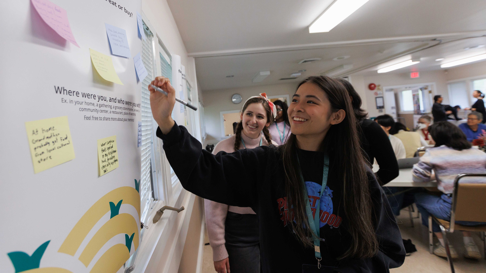

SAY SFU organizes various events off-campus fight for a socialist alternative to the current capitalist status quo, educate members on topics related to socialist political alternatives, and engage in acts of solidarity with various local and international movements.
VeggieSFU brings together like-minded individuals to foster awareness about the values of a plant-based lifestyle and to promote holistic approaches for living a healthy, happy, and sustainable life.

The Simon Fraser Public Interest Research Group (SFPIRG) is a student-funded and student-directed resource centre dedicated to engaging students and community in social and environmental justice. SFPIRG's areas of work include education, action, research, and community-building.

Embark Sustainability Society is a student-centered non-profit that catalyzes student sustainability journeys by engaging SFU students in programs, events, and other initiatives to spark dialogue and cultivate actions that address systemic challenges within our climate and food systems.